Activity: Apply a body temperature load
-
Open the file FE_Pump_Casing.par.
Simulation models are delivered in the \Program Files\Siemens\Solid Edge 2023\Training\Simulation folder.
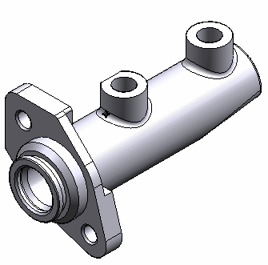
-
Create a simulation study:
-
Select Simulation tab→Study group→New Study.
Note that the pump casing material is already defined.
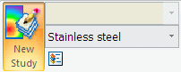
-
Choose the Linear Static study type and Tetrahedral mesh type.
-
Click OK.
-
-
Define a temperature load:
-
Select Simulation tab→Body Loads group→Body Temperature
 .
. -
Type a temperature value of 148 C.
This is equivalent to 300 degrees Fahrenheit.
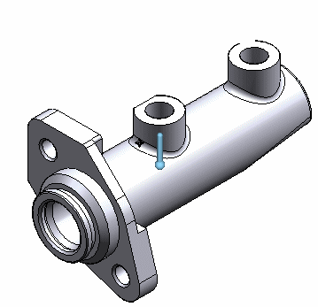
-
Right-click in space to accept the temperature load. Click in space to finish.
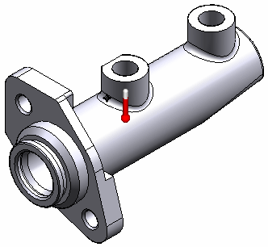
You can see the Simulation pane entry for this load.
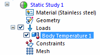
-
-
Apply fixed constraints:
-
Select Simulation tab→Constraints group→Fixed.

-
On the Constraints command bar, change the Selection Type to Feature.
-
Within PathFinder, in the Features collector, click Protrusion 4, Protrusion 5 and Protrusion 6 to select all faces of the mounting plate.
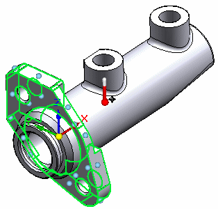
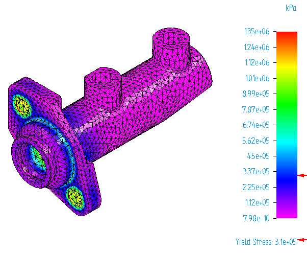
-
Right-click to accept and click to finish.
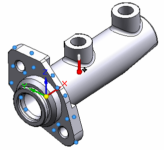
-
-
Mesh and solve the study:
-
In the Simulation pane, turn off constraints and loads.
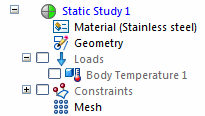
-
Select the Mesh command. Choose Mesh & Solve.
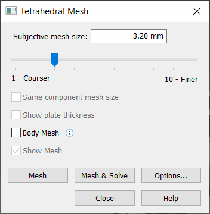
After a few moments, the part is meshed and solved.
-
-
View the results:
-
In the Simulation Results environment, select Home tab→Deformation group→Actual.
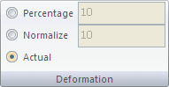
-
Rotate and zoom to view the areas of highest stress.
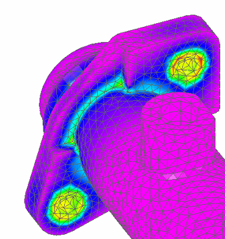
-
-
On the ribbon, click Close Simulation Results.

-
On the Quick Access toolbar click Save, and then click the X button on the document tab to close this file.
How do I
Define a loadActivity: Apply a bearing load
Activity: Apply a centrifugal load
Activity: Apply a torque load
Learn more
Creating and using loadsLoad labels and symbols
Structural and body loads
Thermal loads
External loads (imported loads)
Loads directional steering wheel
Look up more details
Loads command barThermal Load Options dialog box
Radiation Load Options dialog box
Color dialog box
Graphic Symbol Size dialog box